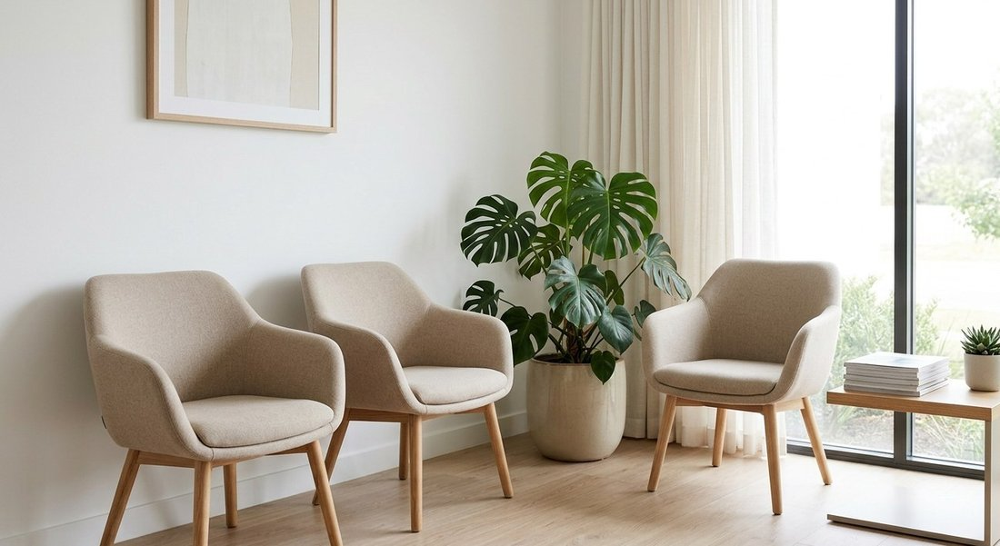

Tu sonrisa
en buenas
manos
Odontología integral en Dosquebradas, Risaralda. Ortodoncia, implantes, microdiseño de sonrisa y más, en un ambiente seguro y con resultados naturales y rápidos.

Odontología integral en Dosquebradas, Risaralda. Ortodoncia, implantes, microdiseño de sonrisa y más, en un ambiente seguro y con resultados naturales y rápidos.

En Clident ofrecemos odontología completa en Dosquebradas, Risaralda. Desde ortodoncia y rehabilitación oral hasta implantes dentales y microdiseño de sonrisa, todo en un solo lugar con atención personalizada y un enfoque 100% centrado en el paciente.
Trabajamos con protocolos de bioseguridad certificados, citas puntuales y resultados que priorizan la naturalidad. No buscamos cambios drásticos: buscamos que tu sonrisa se vea mejor, se sienta bien y dure.


Diseñamos cada detalle del consultorio para que la visita sea lo más tranquila posible. Desde la sala de espera hasta el momento del procedimiento, cuidamos que cada paciente se sienta en buenas manos.
Cada tratamiento se planifica con criterio clínico y enfoque estético para lograr resultados que luzcan naturales y se mantengan en el tiempo.
Respetamos el tiempo de cada paciente. Las citas se cumplen en el horario acordado, sin esperas innecesarias ni improvisaciones.
Cumplimos con todos los protocolos de bioseguridad vigentes. Instrumentos esterilizados, superficies desinfectadas y materiales de calidad certificada.
Alineamos dientes y corregimos la mordida con brackets metálicos o cerámicos. Tratamiento clásico, confiable y efectivo para niños, adolescentes y adultos.
Saber másReemplazamos dientes perdidos con implantes de titanio que se integran al hueso maxilar. La solución más durable y natural para recuperar la función y la estética.
Saber másRehabilitamos la boca con prótesis fijas o removibles cuando hay pérdida de varios dientes. Recuperamos la capacidad masticatoria y la apariencia de la sonrisa.
Saber másSalvamos dientes con infección o daño pulpar a través del tratamiento de conductos. Conservamos el diente natural evitando la extracción cuando es posible.
Saber másRediseñamos la forma, el color y la proporción de los dientes anteriores para lograr una sonrisa armónica y natural. Procedimiento estético de alta precisión.
Saber másAclaramos el tono natural de los dientes con técnicas seguras y controladas. Resultados visibles desde la primera sesión sin dañar el esmalte dental.
Saber más
Ortodoncia · Tratamientos para niños y adultos
Especialista en ortodoncia con amplia experiencia en tratamientos con brackets para niños, adolescentes y adultos. Enfoque clínico riguroso y atención cercana en cada etapa del tratamiento.

Implantes dentales y prótesis
Recuperamos la función masticatoria y la estética con implantes de titanio y prótesis a medida. Soluciones duraderas para la pérdida dental, con resultados naturales.

Blanqueamiento y diseño estético
Transformamos la apariencia de la sonrisa con microdiseño, aclaramiento dental y procedimientos estéticos que potencian la naturalidad y la armonía facial.
+1.000 SONRISAS TRANSFORMADAS · DOSQUEBRADAS, RISARALDA
"Me puse implantes en Clident y quedé encantada. La Dra. Ana me explicó todo el proceso con paciencia y los resultados son increíbles. Mi sonrisa luce completamente natural."

"Llevé a mi hijo de 11 años para ortodoncia y la atención fue excelente. Las citas siempre puntuales, el consultorio limpio y el equipo muy profesional."

"El microdiseño de sonrisa me cambió la vida. Tardé mucho en animarme pero valió la pena. Resultados naturales, sin exageraciones, justo lo que quería."
Planificamos cada tratamiento para que el resultado sea estético pero sin perder la naturalidad. Sin exageraciones, sin cambios que se noten artificiales.
Respetamos el tiempo de cada paciente. Las citas se cumplen según lo acordado, sin esperas que compliquen el día a día.
Cumplimos con todos los protocolos de bioseguridad vigentes. Instrumentos esterilizados y materiales de calidad verificada en cada procedimiento.
Respondemos dudas, agendamos citas y hacemos seguimiento por WhatsApp. Sin filas, sin llamadas interminables, sin complicaciones.
Agenda una consulta en Clident, Dosquebradas. Ortodoncia, implantes, microdiseño de sonrisa y más, con resultados naturales y citas siempre puntuales.
Atendemos con cita previa. Agenda por WhatsApp para mayor comodidad.
Cl. 35 #14-57
Dosquebradas, Risaralda